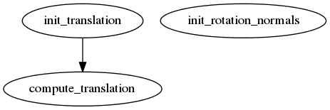

Master index
Function Index of the Module
Dependency Graph of the Module

Generated on Fri 01-Dec-2017 11:51:10 by
Renato Martins, Inria Sophia Antipolis
© 2017
 Master index
Master index Master index
Master index